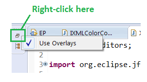
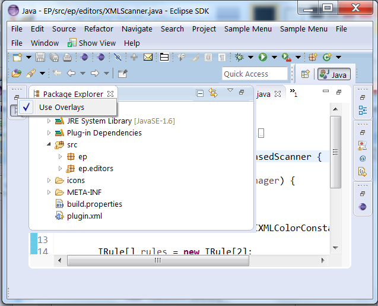
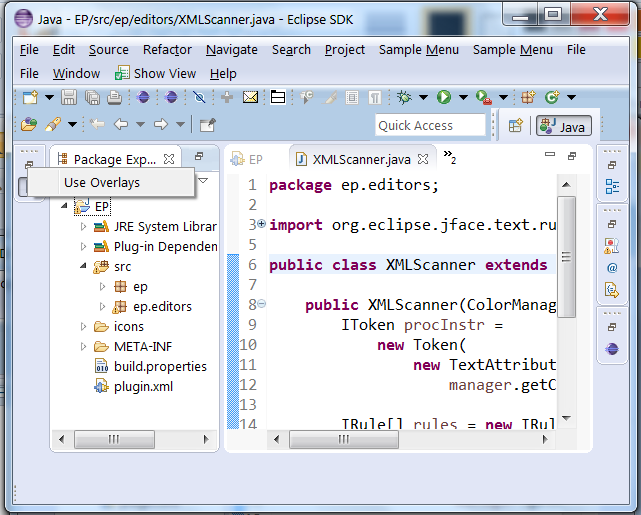

- Use Overlays: This is the current mode where showing a view in a minimized stack opens it in a 'fly out', overlaying part of the presentation.
- Temporary Restore: This is a new mode that will temporarily put the stack back into the perspective layout while one of its views is active. This has the advantage that the minimized view won't overlay anything in the current presentation (e.g. your editor...).
In order to access the new mode, right-click on the Restore button of a minimized stack and clear the Use Overlays menu item (see image below). Note that this change is global, so once it's set, all minimized stacks will use the selected mode.

Here's what the current mode looks like:

Here's what the new mode looks like. Note how the editor has been pushed to the right rather than being obscured:

We're really interested in your feedback on this! The initial response has been positive enough that we're considering making the non-overlay mode the default. What do you think? (Post your comments on bug 426556).
WorkspaceLock API allowed a special client (usually Platform UI) to
hook into the locking protocols used by the workspace implementation. This hook
was used to mitigate deadlocks due to interaction with synchronous SWT events,
and was never intended to be used by other clients. In the 3.0 release this API
was deprecated in favor of a more general API provided by the org.eclipse.core.jobs
bundle. Invoking this API has had no effect since the 3.0 release. The specific API
being removed includes:
- The
org.eclipse.core.resources.WorkspaceLockclass. - The method
org.eclipse.core.resources.IWorkspace#setWorkspaceLock
IncrementalProjectBuilder#getRule() method returned a scheduling rule
that was required for building the project by the builder. This method was intended to be used by the builder framework only.
In the 3.6 release this method was deprecated in favor of a more general method IncrementalProjectBuilder#getRule(int, Map).
The specific API being removed includes:
- The method
org.eclipse.core.resources.IncrementalProjectBuilder#getRule()
IncrementalProjectBuilder#getRule(int, Map). Clients that implement the API listed
above should implement IncrementalProjectBuilder#getRule(int, Map) instead.
SWT_GTK3 to 0.
For more details see bug 421127.
SWT.MOZILLA can now be used with the XULRunner 24.x runtime.
SWT.Sleep and SWT.Wakeup,
which are sent before the Display event loop goes into sleep and after
it wakes up from sleep respectively. These events can e.g. be used to monitor the duration
of sleep time in SWT applications.